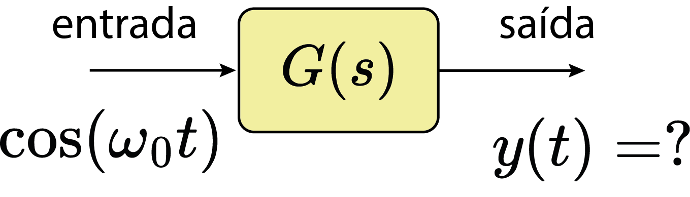
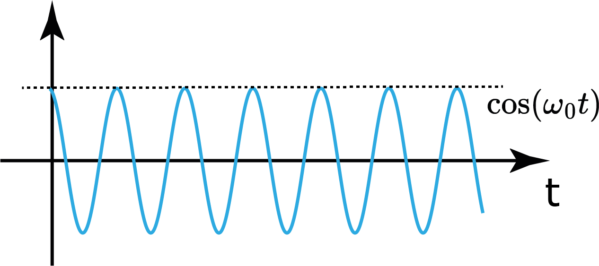
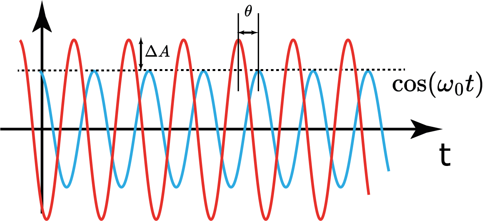

Aula 20:
Resposta em Frequência de SLIT
SEL0383
12 de novembro de 2024
$ M\ddot{y}=-Ky-\gamma\dot{y}+F(t) $
- Qual a função de transferência?
- Qual a resposta ao impulso?

$$ x(t)=e^{st} $$
$$ y(t)=? $$
$$ y(t)=g(t)\ast x(t) $$
$$ y(t)=g(t)\ast e^{st}=\int_{-\infty}^\infty g(\tau)e^{s(t-\tau)}d\tau $$
$$ y(t)=g(t)\ast e^{st}=\Bigl(\int_{-\infty}^\infty g(\tau)e^{-s\tau}d\tau\Bigr) e^{st} $$
$$ y(t)=g(t)\ast e^{st}=G(s)e^{st} $$

$e^{st}$ é auto-função de SLIT! E $G(s)$ é o respectivo autovalor.
Análogo ao $\mathbb{R}^n$: $ A\vec{v}=\lambda \vec{v} $
$$ x(t)=e^{st}\Bigl|_{\sigma=0}=e^{j\omega t} $$
$$ y(t)=? $$
$$
x(t)=e^{st}\Bigr|_{\sigma=0}
$$
$$ y(t)=g(t)\ast e^{j\omega t}=G(j\omega )e^{j\omega t} $$
$$ \mathcal{F}\{g(t)\}=G(s)\Bigr|_{\sigma=0} = G(j\omega)=G(\omega) $$


É possível obter a resposta ao impulso de um SLIT na prática (experimentalmente)?

Qual a saída do sistema para uma entrada cossenoidal?
$$\cos(\omega_0 t)=\frac{e^{j\omega_0 t}+e^{-j\omega_0 t}}{2}$$
$$ y(t)=g(t)\ast \Bigl( \frac{e^{j\omega_0 t}+e^{-j\omega_0 t}}{2}\Bigr) $$
$$ y(t)=G(j\omega_0)\frac{1}{2}e^{j\omega_0 t}+G(-j\omega_0) \frac{1}{2}e^{-j\omega_0 t} $$
$$ y(t)=G(j\omega_0)\frac{1}{2}e^{j\omega_0 t}+G^*(j\omega_0) \frac{1}{2}e^{-j\omega_0 t} $$
$$ y(t)=|G(j\omega_0)|\frac{1}{2}(e^{j(\omega_0 t+\theta(\omega_0))}+e^{-j(\omega_0t+\theta(\omega_0))}) $$
$$ y(t)=|G(j\omega_0)|\cos(\omega_0 t +\theta(\omega_0)) $$



Usando um gerador de funções $\cos(\omega_0 t)$ para diferentes valores de $\omega_0$ é possível obter $|G(\omega_0)|$ e $\theta(\omega_0)$!
$$ G(j\omega)=|G(j\omega)|e^{j\theta(\omega_0)} $$
Resposta em Frequência $$ G(j\omega)=|G(j\omega)|e^{j\theta(\omega)} $$
A resposta em frequência é suficiente para caracterizar um SLIT!
Resposta ao impulso: $$ g(t)=\mathcal{F}^{-1}\{G(j\omega)\} $$
$$ G(j\omega)=G(s)\Bigr|_{\sigma=0} $$
Exemplo: $$ G(s)=\frac{1}{Ms^2+\gamma s+K} $$$$ G(j\omega)=\frac{1}{-M\omega^2+j\gamma \omega+K} $$

$M=1$, $\gamma=0.1$, e $K=1$
SLIT conservam a frequência! Uma frequência $\omega_0$ que não estiver na entrada não pode aparecer na saída.
$$ Y(j\omega)=G(j\omega)X(j\omega) $$
$$ y(t)=x(t)^2 $$
Esse sistema conserva a frequência?